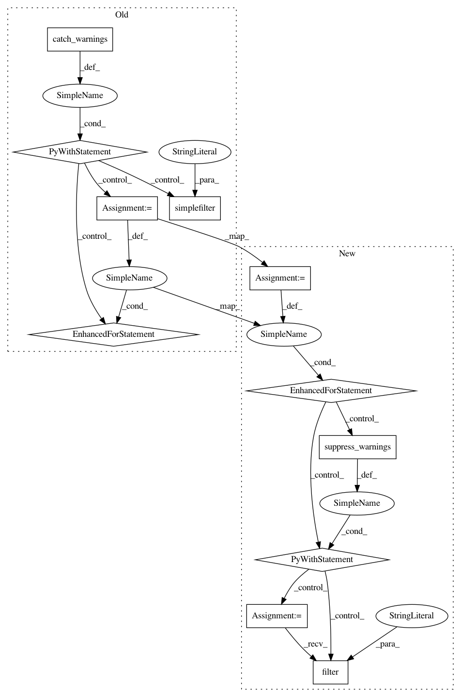

1c880c79459a63c8e36f48966142aea56626818e,scipy/sparse/linalg/tests/test_expm_multiply.py,TestExpmActionSimple,test_sparse_expm_multiply,#TestExpmActionSimple#,110
Before Change
assert_allclose(observed, expected)
def test_sparse_expm_multiply(self):
with warnings.catch_warnings():
warnings.simplefilter("ignore", category=SparseEfficiencyWarning)
np.random.seed(1234)
n = 40
k = 3
nsamples = 10
for i in range(nsamples):
A = scipy.sparse.rand(n, n, density=0.05)
B = np.random.randn(n, k)
observed = expm_multiply(A, B)
expected = scipy.linalg.expm(A).dot(B)
assert_allclose(observed, expected)
def test_complex(self):
A = np.array([
[1j, 1j],
[0, 1j]], dtype=complex)
After Change
n = 40
k = 3
nsamples = 10
for i in range(nsamples):
A = scipy.sparse.rand(n, n, density=0.05)
B = np.random.randn(n, k)
observed = expm_multiply(A, B)
with suppress_warnings() as sup:
sup.filter(SparseEfficiencyWarning,
"splu requires CSC matrix format")
sup.filter(SparseEfficiencyWarning,
"spsolve is more efficient when sparse b is in the CSC matrix format")
expected = scipy.linalg.expm(A).dot(B)
assert_allclose(observed, expected)
def test_complex(self):
A = np.array([
[1j, 1j],
[0, 1j]], dtype=complex)
In pattern: SUPERPATTERN
Frequency: 4
Non-data size: 11
Instances
Project Name: scipy/scipy
Commit Name: 1c880c79459a63c8e36f48966142aea56626818e
Time: 2017-07-10
Author: cdouglass256@gmail.com
File Name: scipy/sparse/linalg/tests/test_expm_multiply.py
Class Name: TestExpmActionSimple
Method Name: test_sparse_expm_multiply
Project Name: scipy/scipy
Commit Name: 1c880c79459a63c8e36f48966142aea56626818e
Time: 2017-07-10
Author: cdouglass256@gmail.com
File Name: scipy/sparse/linalg/tests/test_matfuncs.py
Class Name: TestExpM
Method Name: test_padecases_dtype_sparse_complex
Project Name: scipy/scipy
Commit Name: bf2c49078d1306382e4eb50b144d357ec039aee9
Time: 2017-07-15
Author: cdouglass256@gmail.com
File Name: scipy/optimize/tests/test_least_squares.py
Class Name: BaseMixin
Method Name: test_jac_options
Project Name: scipy/scipy
Commit Name: 1c880c79459a63c8e36f48966142aea56626818e
Time: 2017-07-10
Author: cdouglass256@gmail.com
File Name: scipy/sparse/linalg/tests/test_expm_multiply.py
Class Name: TestExpmActionInterval
Method Name: test_sparse_expm_multiply_interval